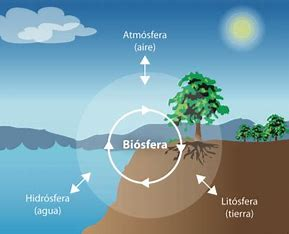
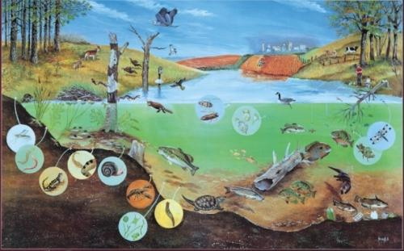

¿QUÉ ES EL PLANETA TIERRA?
Primer principio:"El primer principio básico de la naturaleza establece que la Tierra es un ecosistema o sistema viviente caracterizado por ser finito, en homeostasis y sustentable."
LA TIERRA ES UN SISTEMA VIVIENTE
La Tierra, llamada también Gaia, es un sistema viviente o ecosistema por sí misma y esta característica está definida por la interacción de los diversos ecosistemas acuáticos y terrestres que la integran y que al evolucionar mediante procesos geoquímicos (abióticos) y biológicos (bióticos) determinaron las condiciones iniciales apropiadas para el inicio de la vida y la posterior consolidación de la biosfera.
ESTRUCTURA Y FUNCIONAMIENTO DE LA TIERRA
Segundo principio:El segundo principio básico de la Naturaleza establece que la Tierra es un sistema viviente, constituido por dos subsistemas: subsistema físico o ecosfera y subsistema biológico.
SUBSISTEMA FÍSICO
El subsistema físico está integrado por la atmósfera (aire), la hidrosfera (agua) y la litosfera (suelo). La atmósfera es una cubierta protectora de la Tierra, sin ella la temperatura terrestre alcanzaría más de 75 °C durante el día y menos de 130 °C bajo cero durante la noche. La hidrosfera es el agua en estado líquido que cubre a la Tierra. La litosfera es la porcion de la corteza terrestre.
SUBSISTEMA BIOLÓGICO
El subsistema biológico está integrado por los organismos productores, consumidores (primarios, secundarios y terciarios) y desintegradores. En este subsistema se encuentran los materiales y sustancias orgánicas, y ocurren las interrelaciones bióticas entre organismos.